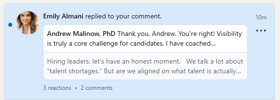
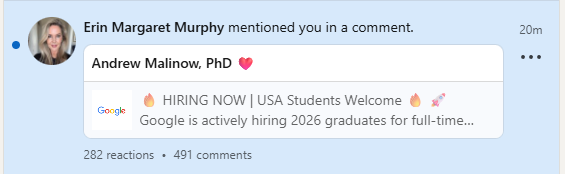
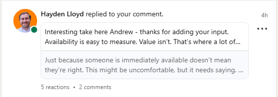

For Job Seekers
Stop resume blasting. Start hiring conversations.
Junior finds the right LinkedIn hiring posts and drafts comments in your voice so you can start real conversations with recruiters and hiring managers.
First month free · Card required at signup
Real replies from real LinkedIn conversations
Junior helps you show up with thoughtful comments that get hiring-side responses.



How Junior helps your job search
- Finds posts where hiring teams are active right now
- Writes natural comments aligned with your background
- Helps you turn replies into real conversations
- Keeps your activity consistent without spending hours daily
Opportunity often appears outside your existing network. Junior helps you find those in-progress threads and join with relevance.
Start FreeCommon questions
Will this guarantee interviews?
No tool can guarantee interviews. Junior helps you create more relevant conversations that can lead to better opportunities.
Does this replace applications?
No. It complements applications by increasing your visibility in hiring conversations.
How fast can I start?
Setup takes a few minutes. After that, you can start engaging immediately.
How Junior finds the right hiring conversations
Not every LinkedIn post is worth your time. Junior filters for the ones that lead to replies.
Matches your target roles & topics
Your bio, tone, and goals
A reply you'd actually write
Your reputation stays protected
Junior uses your specific bio, networking goals, and tone to generate replies. It never posts generic templates or off-brand spam.
Your own browser, your own IP, your own session. No shared servers or cross-account fingerprinting.
Variable timing, natural scroll patterns, and conservative daily limits keep activity within normal ranges.